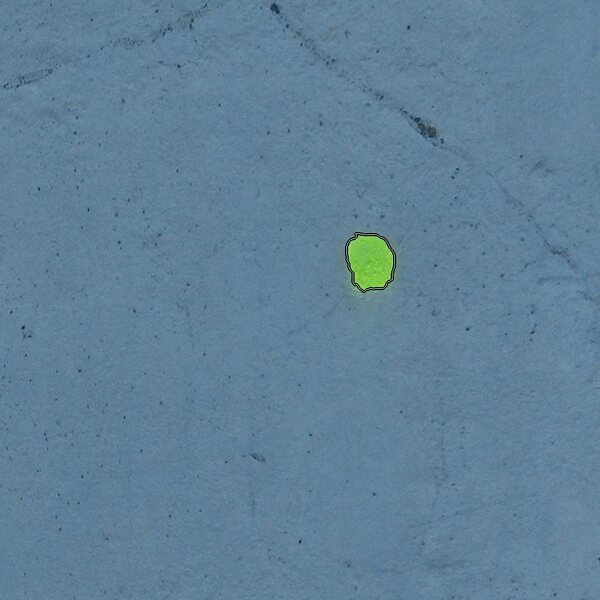
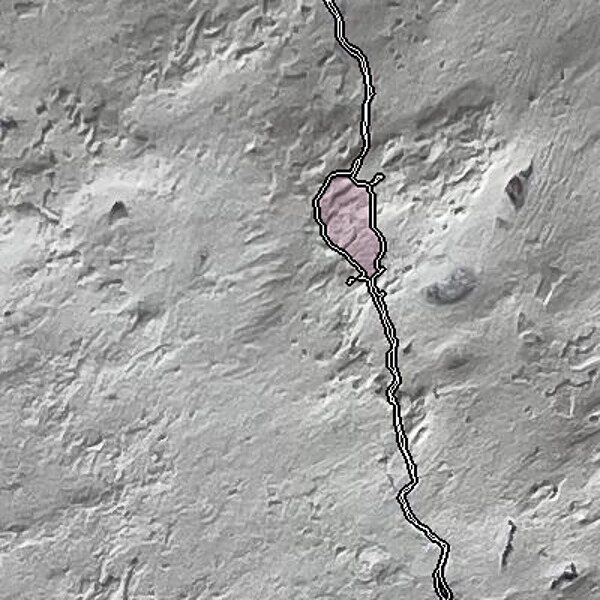
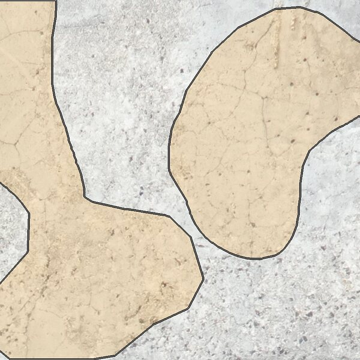
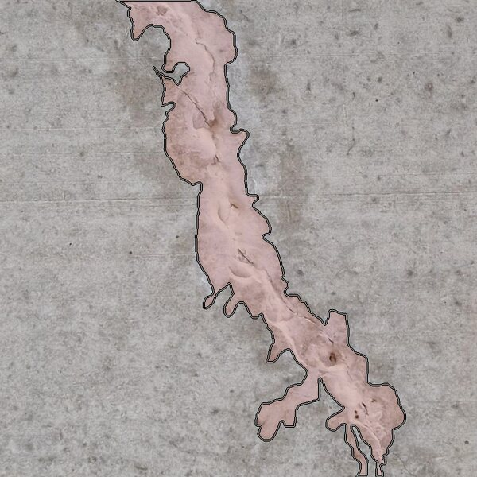
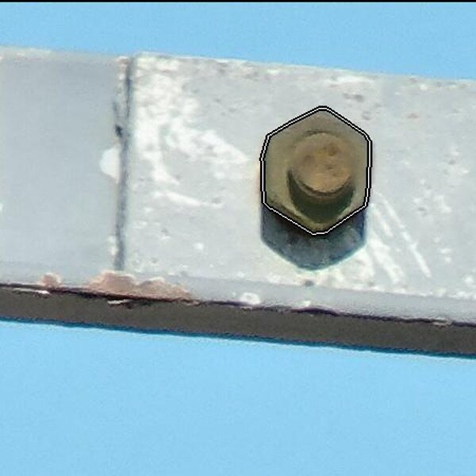
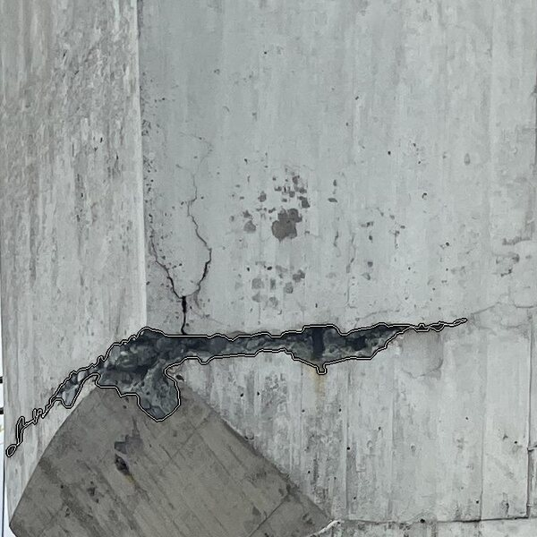

Abstract
Automated structural health monitoring is essential to prevent catastrophic infrastructure failures. Precise, pixel-level defect segmentation is needed to accurately assess structural integrity, but progress in defect segmentation for civil infrastructures has been held back by an extreme scarcity of data, which requires costly expert annotation. The need for data is accentuated by algorithmic hurdles intrinsic to the problem, including center-bias and the need to rely more on shape when inspecting nearly textureless building materials. To remove the bottleneck, we introduce Cracks in the Foundation (CiF), the largest and most detailed civil infrastructure (instance) segmentation dataset to date, comprising ≈150,000 high-resolution images meticulously curated over five years in collaboration with civil engineering experts. With the help of this unprecedented data source, we expose a blind spot of current visual AI: despite the advent of promptable Foundation Models (FMs) and Vision Language Models (VLMs), and despite the impressive abilities of today's specialised segmentation models, it turns out that dense image understanding in the built environment is nowhere near solved. Our evaluations indicate that even the most recent zero-shot FMs face significant challenges when deployed on real-world infrastructure and even the performance of specialised models with domain-specific supervision plateaus at ≈25% mAP. CiF establishes inspection of civil infrastructure, an elementary and seemingly easy perceptual task, as an open challenge that reveals fundamental weaknesses of present-day models trained predominantly on internet images, literally and figuratively highlighting cracks in the current foundation model paradigm.
Defect Classes
CiF annotates six real-world defect types observed across five years of bridge and infrastructure inspection.






Dataset
- 300,708 rows · ~123 GB · license: CDLA Permissive 2.0
- Collected over five years with infrastructure partners (Sund & Bælt, Trafikverket, Canton of Zürich)
- Hosted on Hugging Face: ibm-research/cif-dataset
Citation
@misc{farronato2026cracks,
title = {Cracks in the Foundation: A Civil Infrastructure Dataset to Challenge Vision Foundation Models},
author = {Farronato, Nicola and Avogaro, Niccolò and Frick, Thomas and Rigotti, Mattia and Khan, Rizwan Ullah and Magno, Michele and Schindler, Konrad and Malossi, Cristiano and Scheidegger, Florian},
year = {2026},
eprint = {2605.18413},
archivePrefix = {arXiv},
primaryClass = {cs.CV}
}